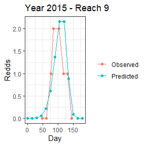
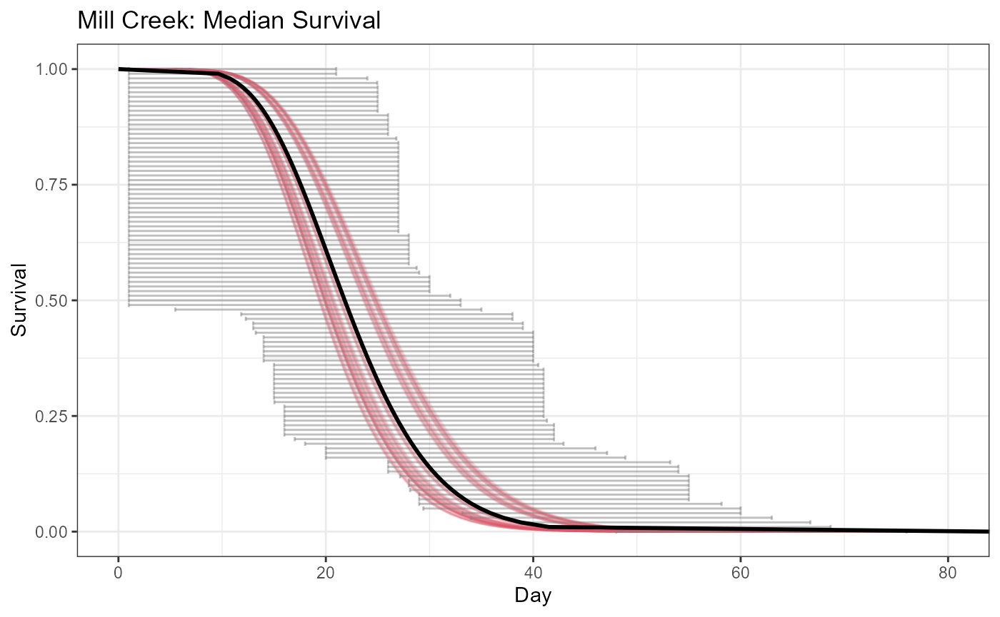
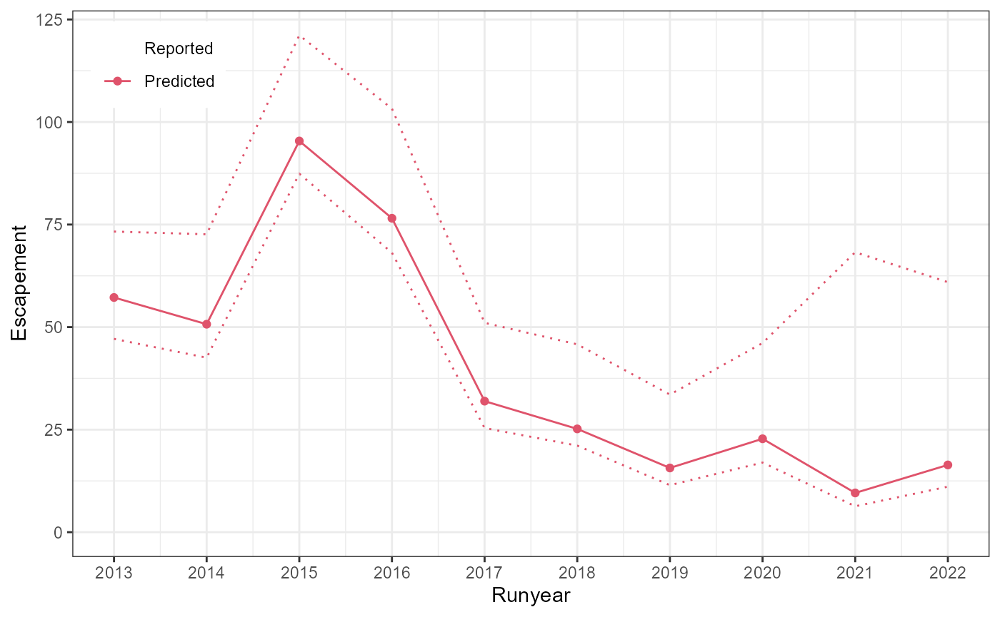

Estimating Salmonid Escapement after Fitting a VAST model
survival_example.Rmd
library(StreamVAST)
library(INLA)
#> Loading required package: Matrix
#> Loading required package: sp
#> This is INLA_24.02.09 built 2024-02-09 03:35:28 UTC.
#> - See www.r-inla.org/contact-us for how to get help.
#> - List available models/likelihoods/etc with inla.list.models()
#> - Use inla.doc(<NAME>) to access documentation
library(sf)
#> Linking to GEOS 3.11.2, GDAL 3.8.2, PROJ 9.3.1; sf_use_s2() is TRUE
library(ggplot2)
library(gridExtra)
Mill.vast<-readRDS("Mill_vastmodel.rds")
Mill.vast$surveydata<-st_transform(Mill.vast$surveydata,"wgs84")Estimating Salmonid Escapement
This project was originally designed to support salmonid population monitoring in the state of Washington, US. While the other chapters focus on more general applications, this chapter will cover methods that are more specific to the Pacific Northwest salmonid community.
From Redd Density to Fish Populations
While in some cases it may be possible to directly model the number of unique redds, most spawning ground monitoring suffers from difficulties, interruptions, and lack of coverage that make this infeasible. Instead this method focuses on the “area under the curve” or AUC method (not to be confused with the “area under the receiver operating curve” metric which is sometimes abbreviated AUC). In this method, the predicted number of total (non-unique) redds is plotted over time.
dat1<-subset(Mill.vast$preds,Year==2015 & Reach==9)[,c("pred_Redds","Statday")]
names(dat1)<-c("Redds","Day")
dat1$group<-"Predicted"
dat2<-subset(Mill.vast$countdata,Year==2015 & Reach==9)[,c("Redds","Day")]
dat2$group<-"Observed"
ggplot(data=rbind(dat1,dat2))+
geom_point(aes(x=Day,y=Redds,col=group))+
geom_line(aes(x=Day,y=Redds,col=group))+
theme_bw()+theme(legend.title = element_blank())+
ggtitle("Year 2015 - Reach 9") The area under the curve is calculated separately for each reach and year combination. The calculations were made in the previous chapter when using the VASTpreds function and can be accessed from the aucdata slot in the streamVAST object.
head(summary(Mill.vast$aucdata$auctotals))
#> Runyear AUC pred_AUC pred_AUC_lower pred_AUC_upper
#> Min. :2013 Min. :0 Min. : 117.5 Min. : 77.57 Min. : 420.3
#> 1st Qu.:2015 1st Qu.:0 1st Qu.: 220.8 1st Qu.: 162.59 1st Qu.: 612.5
#> Median :2018 Median :0 Median : 367.0 Median : 298.21 Median : 781.8
#> Mean :2018 Mean :0 Mean : 577.6 Mean : 488.35 Mean : 942.0
#> 3rd Qu.:2020 3rd Qu.:0 3rd Qu.: 842.7 3rd Qu.: 696.77 3rd Qu.:1107.9
#> Max. :2022 Max. :0 Max. :1475.0 Max. :1351.78 Max. :1873.4
#> pred_AUC_SD
#> Min. : 76.75
#> 1st Qu.: 88.81
#> Median :121.86
#> Mean :136.40
#> 3rd Qu.:154.82
#> Max. :253.66The area under the curve will be in units of Redds*Days. If we divide this number by the residence or survival time of redds, the result will be an estimate of the number of unique redds. This value can be obtained from expert opinion or the literature, but if repeated observations of redds are available it is not difficult to model.
Modeling Redd Survival
Mill.redds.sf<-st_read(dsn="Mill_Creek_redds_example.shp")
#> Reading layer `Mill_Creek_redds_example' from data source
#> `C:\Users\harj3477\Jeremy Documents\R materials\StreamVAST\vignettes\Mill_Creek_redds_example.shp'
#> using driver `ESRI Shapefile'
#> Simple feature collection with 389 features and 8 fields
#> Geometry type: POINT
#> Dimension: XY
#> Bounding box: xmin: 942128.8 ymin: 322744.9 xmax: 1149562 ymax: 357187
#> Projected CRS: NAD83 / Washington South (ftUS)
Mill.redds.sf<-st_transform(Mill.redds.sf,"wgs84")
Mill.redds<-data.frame(as.data.frame(Mill.redds.sf)[,c("Year","rdd_nm_","srvy_dt","rdd_st_")],lon=st_coordinates(Mill.redds.sf)[,1],lat=st_coordinates(Mill.redds.sf)[,2])
Mill.redds$srvy_dt<-sapply(Mill.redds$srvy_dt,FUN=function(x)return(strsplit(x,split=" ")[[1]][1]))
Mill.redds$day<-as.integer(strftime(x=strptime(x=Mill.redds$srvy_dt,format="%m/%d/%Y"),format="%j"))
head(Mill.redds)
#> Year rdd_nm_ srvy_dt rdd_st_ lon lat day
#> 1 2022 RD00015368 4/25/2022 NR -123.1926 46.19579 115
#> 2 2022 RD00019698 4/12/2022 NR -123.2086 46.21647 102
#> 3 2022 RD00019698 4/25/2022 SV -123.2086 46.21647 115
#> 4 2022 RD00019699 4/12/2022 NR -123.2545 46.24179 102
#> 5 2022 RD00019699 4/25/2022 SV -123.2545 46.24179 115
#> 6 2022 RD00028389 4/25/2022 NR -123.2351 46.27183 115First we recall the redd data from before and do some minor formatting. Each redd must have a date, a unique id number, and a set of coordinates. It must also have a status code that uses the “NR” for New Redds, “SV” for Still Visible redds that have been observed previously, and “NV” for Not Visible redds that were previously observed but are no longer identifiable.
Next, the MakeReddSurvival function will process the data into a usable form. Because we have surveyed each reach multiple times, we can use the intervals between surveys and the redd status codes to determine a minimum and maximum survival time for each redd.
Mill.survdata<-MakeReddSurvival(streamvast = Mill.vast,redds = Mill.redds,redd.ids = "rdd_nm_",
redd.crs = "wgs84",redd.status = "rdd_st_",survey.tol = 250)
#> | | | 0% | |= | 1% | |= | 2% | |== | 2% | |== | 3% | |=== | 4% | |=== | 5% | |==== | 5% | |==== | 6% | |===== | 6% | |===== | 7% | |===== | 8% | |====== | 8% | |====== | 9% | |======= | 9% | |======= | 10% | |======== | 11% | |======== | 12% | |========= | 12% | |========= | 13% | |========== | 14% | |========== | 15% | |=========== | 15% | |=========== | 16% | |============ | 17% | |============ | 18% | |============= | 18% | |============= | 19% | |============== | 19% | |============== | 20% | |============== | 21% | |=============== | 21% | |=============== | 22% | |================ | 22% | |================ | 23% | |================= | 24% | |================= | 25% | |================== | 25% | |================== | 26% | |=================== | 27% | |==================== | 28% | |==================== | 29% | |===================== | 30% | |====================== | 31% | |====================== | 32% | |======================= | 32% | |======================= | 33% | |======================== | 34% | |======================== | 35% | |========================= | 35% | |========================= | 36% | |========================== | 36% | |========================== | 37% | |========================== | 38% | |=========================== | 38% | |=========================== | 39% | |============================ | 39% | |============================ | 40% | |============================= | 41% | |============================= | 42% | |============================== | 42% | |============================== | 43% | |=============================== | 44% | |=============================== | 45% | |================================ | 45% | |================================ | 46% | |================================= | 47% | |================================= | 48% | |================================== | 48% | |================================== | 49% | |=================================== | 49% | |=================================== | 50% | |=================================== | 51% | |==================================== | 51% | |==================================== | 52% | |===================================== | 52% | |===================================== | 53% | |====================================== | 54% | |====================================== | 55% | |======================================= | 55% | |======================================= | 56% | |======================================== | 57% | |======================================== | 58% | |========================================= | 58% | |========================================= | 59% | |========================================== | 60% | |========================================== | 61% | |=========================================== | 61% | |=========================================== | 62% | |============================================ | 62% | |============================================ | 63% | |============================================ | 64% | |============================================= | 64% | |============================================= | 65% | |============================================== | 65% | |============================================== | 66% | |=============================================== | 67% | |=============================================== | 68% | |================================================ | 68% | |================================================ | 69% | |================================================= | 70% | |================================================== | 71% | |================================================== | 72% | |=================================================== | 73% | |==================================================== | 74% | |==================================================== | 75% | |===================================================== | 75% | |===================================================== | 76% | |====================================================== | 77% | |====================================================== | 78% | |======================================================= | 78% | |======================================================= | 79% | |======================================================== | 79% | |======================================================== | 80% | |======================================================== | 81% | |========================================================= | 81% | |========================================================= | 82% | |========================================================== | 82% | |========================================================== | 83% | |=========================================================== | 84% | |=========================================================== | 85% | |============================================================ | 85% | |============================================================ | 86% | |============================================================= | 87% | |============================================================= | 88% | |============================================================== | 88% | |============================================================== | 89% | |=============================================================== | 90% | |=============================================================== | 91% | |================================================================ | 91% | |================================================================ | 92% | |================================================================= | 92% | |================================================================= | 93% | |================================================================= | 94% | |================================================================== | 94% | |================================================================== | 95% | |=================================================================== | 95% | |=================================================================== | 96% | |==================================================================== | 97% | |==================================================================== | 98% | |===================================================================== | 98% | |===================================================================== | 99% | |======================================================================| 100%
head(Mill.survdata)
#> Redd Year min.start max.start min.end max.end min.duration max.duration
#> 1 RD00015368 2022 103 115 116 129 1 26
#> 2 RD00019698 2022 81 102 116 129 14 48
#> 3 RD00019699 2022 81 102 116 129 14 48
#> 4 RD00028389 2022 103 115 116 129 1 26
#> 5 RD00028390 2022 103 115 116 129 1 26
#> 6 RD00028897 2022 116 131 132 145 1 29
#> Reach lon lat complete
#> 1 2 -123.1926 46.19579 FALSE
#> 2 6 -123.2086 46.21647 FALSE
#> 3 11 -123.2545 46.24179 FALSE
#> 4 17 -123.2351 46.27183 FALSE
#> 5 3 -123.1964 46.20197 FALSE
#> 6 6 -123.2090 46.21606 FALSEINLA survival model
For the survival model, we can use existing methods in INLA to fit a pretty good survival model without much difficulty. This model will use a simplified spatial graph that estimates spatial covariances based on adjacency as opposed to distance. A function has been included to conveniently generate the required matrix.
Mill.mat<-AdjacencyMatrix(Mill.vast$reachdata)We will build the model in INLA directly. First, we will convert the data into a survival object. Using ‘event’ code 3 specifies that the data is interval censored to be between time and time2.
Then the model itself is fit, with random walk effects on Year and a besag ICAR effect for space based on the adjaceny graph. The family can be either ‘gamma.surv’ or ‘weibull.surv’ and users are encouraged to experiment to find the distribution best for their data.
Mill.inla.surv<-inla.surv(time=Mill.survdata$min.duration,event=rep(3,nrow(Mill.survdata)),time2 = Mill.survdata$max.duration)
Mill.inla<-inla(Mill.inla.surv~f(Year,model="rw1")+f(Reach,model="besag",graph = Mill.mat),
data=Mill.survdata,family="gamma.surv",control.compute = list(waic=T))
#> Warning in inla.model.properties.generic(inla.trim.family(model), mm[names(mm) == : Model 'gammasurv' in section 'likelihood' is marked as 'experimental'; changes may appear at any time.
#> Use this model with extra care!!! Further warnings are disabled.The hyperparameter estimated in INLA is the shape parameter of the estimated gamma distribution. INLA uses a slightly unusual parameterization of the rate parameter. The SurvivalTable function converts the results of the model into tabular format with shape and scale parameters capable with the distribution functions (dgamma, etc.) in base R. From these distributions, we can compute the median survival time estimated for each year and reach.
Mill.gamma.table<-SurvivalTable(model = Mill.inla)
head(Mill.gamma.table)
#> Year Reach Shape Scale MedLife
#> 1 2013 1 10.70806 2.368362 24.57563
#> 2 2013 2 10.70806 2.370724 24.60014
#> 3 2013 3 10.70806 2.373694 24.63095
#> 4 2013 4 10.70806 2.380152 24.69796
#> 5 2013 5 10.70806 2.388422 24.78378
#> 6 2013 6 10.70806 2.397176 24.87461The survival values can be plotted in a variety of ways and the plotSurvivalHistogram and plotSurvivalCurves functions will help.
plotSurvivalCurves(model = Mill.inla,data = Mill.survdata,
title = "Mill Creek: Median Survival")+xlim(NA,80) The final step is to match the predictions of survival time to the auc predictions. This is easily accomplished with the MakeEscapement function. This will fill the “escapedata” slot of the streamvast object, and contains estimates of escapement by reach and year, as well as totals by year.
Mill.vast<-MakeEscapement(streamvast = Mill.vast,survival = Mill.gamma.table)
head(Mill.vast$escapedata$escapedata)
#> Runyear Reach Escape Escape_lower Escape_upper Escape_SD
#> 1 2013 1 0.5076596 0.1628871 1.971844 0.5247303
#> 2 2013 2 1.0979841 0.4006307 3.940403 0.9227687
#> 3 2013 3 2.2323037 1.1909101 4.420250 0.9661213
#> 4 2013 4 2.5235409 1.1567162 6.813785 1.3288599
#> 5 2013 5 5.8685031 3.3022716 9.269785 1.7579439
#> 6 2013 6 9.9483273 6.3363619 15.465090 2.3689752
plotEscapement(Mill.vast)